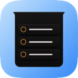
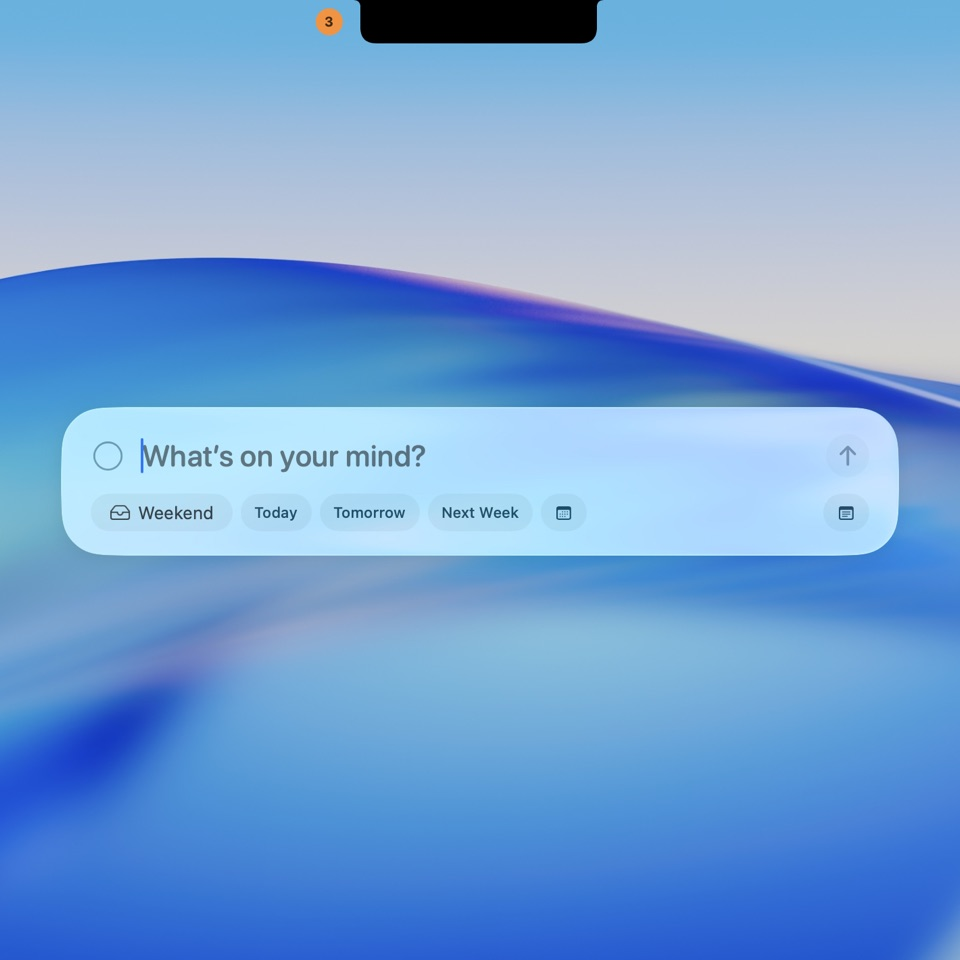
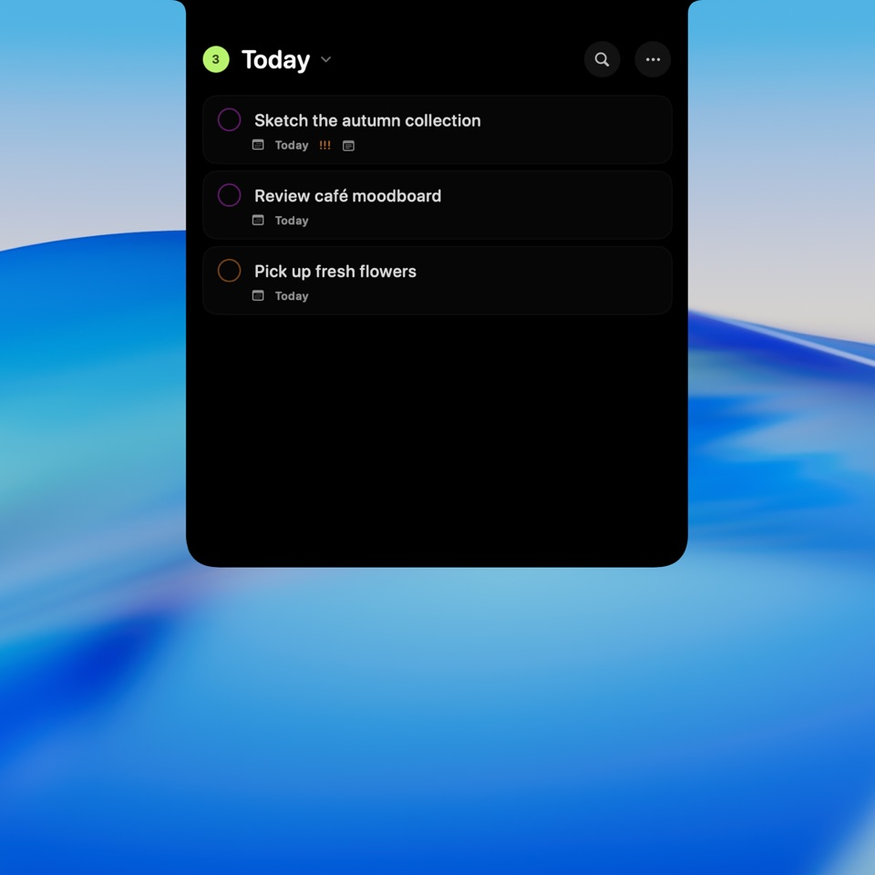
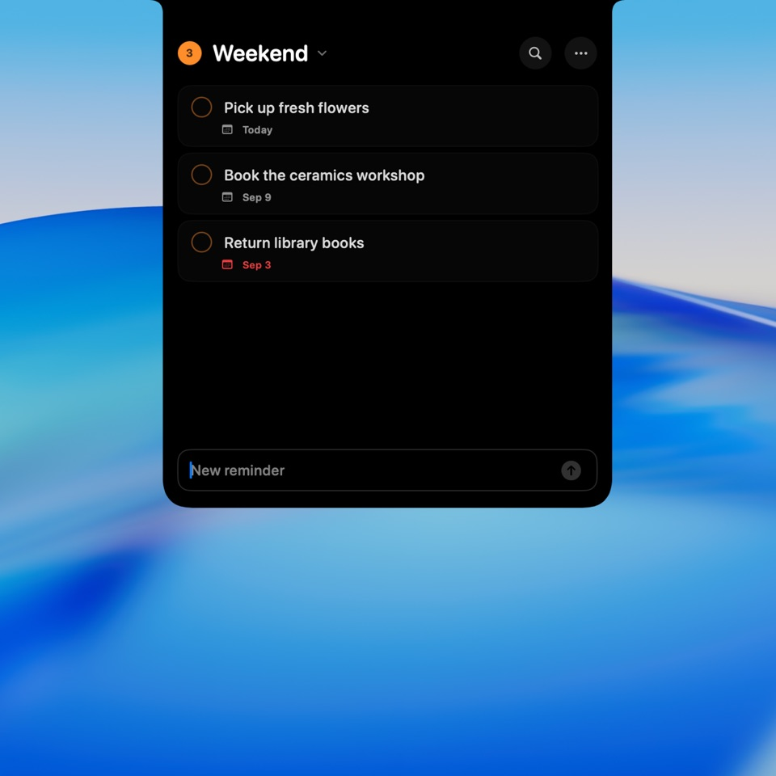

Edit in place
Change a title, add notes, and set a due date, time, all-day state, or priority without leaving the list.

NotchDoApple Reminders, right at your MacBook notch. Add a thought, see what’s due, and check things off without opening another window.
Free and open source. macOS 14 or later.

Native macOS app
Your existing Apple Reminders
No account. No analytics.
01 / Within reach
Keep the everyday parts of Reminders close. Your lists and tasks stay right where they already are.

Global Quick Capture
Press Control + Option + R from any app. A small capture panel opens, ready for your next reminder.
Prefer another shortcut? Record your own in Settings.

Smart scopes + search
See Today, Overdue, Scheduled, or All Open across your Reminders lists. Each task stays in its original list.
Search covers loaded, incomplete reminder titles, not notes or completed tasks.

Your everyday list
Move the pointer to the notch and your list opens. Start typing in the bottom composer to add a reminder.
Escape or an outside click closes the active editor. Scrolling keeps it open.
02 / The details are here, too
The quick actions are only the start. Open a reminder to take care of the details.
Change a title, add notes, and set a due date, time, all-day state, or priority without leaving the list.
Set daily, weekly, monthly, or yearly reminders. Existing repeat rules stay intact when you edit other details.
Choose a Reminders list or create one. Starting fresh? The first-list flow gets you to your first task.
A brief Undo brings back your latest completion. If a change cannot be saved, the app tells you what went wrong.
Hover to open. Type and press Return. Stay across Spaces, see the open-task count, and enable Launch at Login.
Edits save to Apple Reminders, and changes made elsewhere refresh automatically. Read-only lists stay browsable.
03 / Still your reminders
NotchDo works directly with Apple Reminders through EventKit. Your tasks are read and updated in place, without a separate task database.
There is no NotchDo account, cloud service, or analytics pipeline. NotchDo does not send your reminders to a server. Your existing Reminders accounts handle their own sync.
Read the sourceA few practical things
macOS 14 Sonoma or later and full Reminders access. A Mac with a display notch is the intended experience. The download is a universal app for Apple silicon and Intel Macs.
Download the ZIP, unzip it, and move NotchDo.app to Applications. Open the app and allow full Reminders access when prompted. Look at the notch; NotchDo does not appear in the Dock.
NotchDo is a compact client for your existing reminders. Apple Reminders still handles features that its public EventKit API does not expose. NotchDo preserves the order EventKit returns and does not offer custom task reordering.
NotchDo explains why access is needed before asking. If you previously denied it, open System Settings → Privacy & Security → Reminders. Read-only lists can be viewed, with editing disabled.
Yes. Open NotchDo Settings and record your preferred shortcut. The default is Control + Option + R. If another app already owns your new shortcut, NotchDo reports the conflict and keeps the previous one.
Yes. NotchDo is free and open source under the MIT License. You can read the code, report an issue, or build it yourself. Building from source requires Xcode with Swift 6.2 or later.
NotchDo for Mac
macOS 14+ · Apple silicon & Intel
Release notes and all downloads